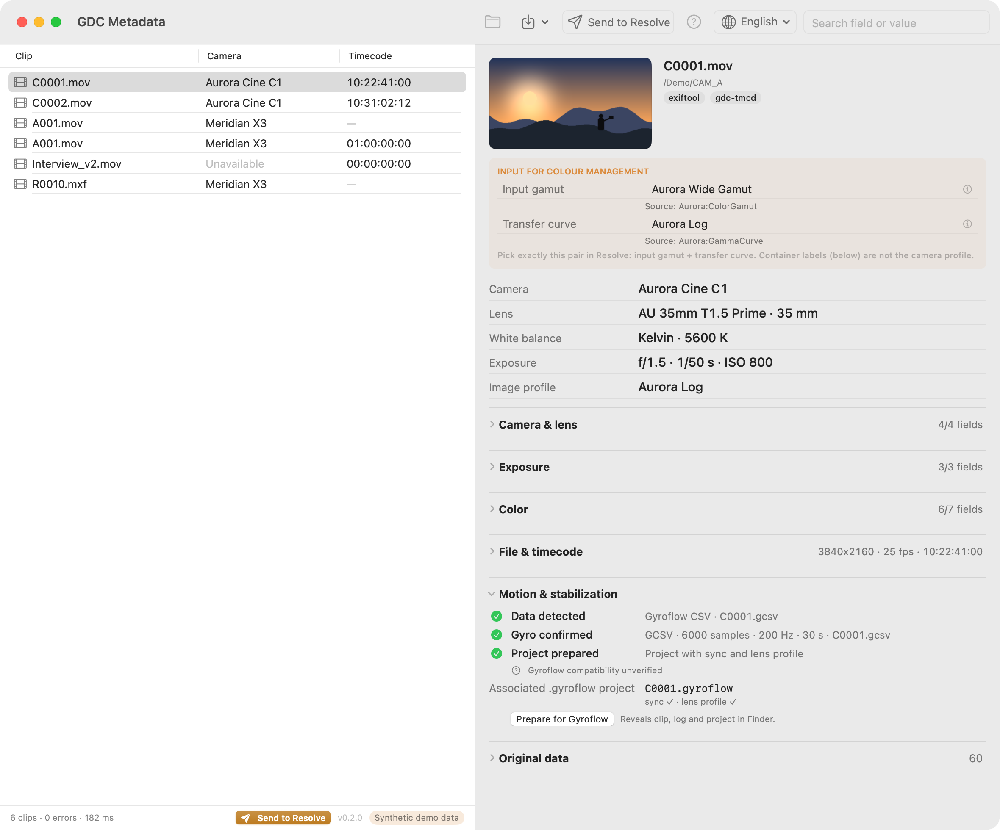

GDC Metadata
Lee cámara, objetivo, exposición, balance de blancos, perfil de imagen y timecode de carpetas multicámara, muestra el origen de cada valor y los envía al Media Pool de DaVinci Resolve. Todo queda en tu Mac; los originales no se modifican.
Descargar para macOS Versión 0.2.0 · gratis · DMG firmado y notarizado
Gamut de entrada y curva de transferencia
Arriba en el inspector, por clip: el gamut de entrada y la curva de transferencia que grabó la cámara, cada uno con su origen, para saber qué entrada elegir en la gestión de color. Verificado: MP4 Canon Cinema EOS / EOS R con la pista de metadatos cndm — Canon Log 2 frente a Canon Log 3 con Cinema Gamut, confirmado frente a DaVinci Resolve (decodificado por GDC; Canon no documenta el formato). Cuando el archivo no contiene nada, ambos quedan No disponible y no se asigna nada; las etiquetas del contenedor y los indicios de los metadatos de la cámara se muestran aparte y no se presentan como perfil de la cámara. Fijar Input Color Space en Resolve es una acción separada, explícita y con confirmación, en proyectos DaVinci YRGB Color Managed, y nunca sobrescribe una elección existente.
Carpeta → inspector

Encuentra cualquier valor

Enviar a Resolve

Movimiento y estabilización

Requisitos
- macOS 14 o posterior.
- ExifTool (por ejemplo: brew install exiftool).
- Python 3 de las Xcode Command Line Tools — solo para enviar a Resolve.
- DaVinci Resolve abierto, con External scripting en Local — solo para enviar a Resolve.
- Los campos vacíos de Resolve se escriben; los valores existentes se conservan; un clip en varios bins se omite por ambiguo (verificado en Resolve tras reabrir el proyecto).
- El CSV es una alternativa, pero la importación de Resolve puede sobrescribir los valores existentes y, con nombres de archivo duplicados, todos los clips con ese nombre reciben los mismos valores. Opciones verificadas: Match using filename activado, Timecode inicio/fin desactivado.
- Junto a cada clip se escribe un sidecar <clip>.gdc-metadata.json; los originales solo se leen.
Versión y actualizaciones: la versión instalada está en la barra inferior y en Acerca de; Buscar actualizaciones… / Actualizar ahora instalan las versiones nuevas desde la app.
¿Ya tienes la 0.1.0? Esa versión no tiene actualizador: instala una vez el nuevo DMG (arrastra la app sobre Applications y elige Reemplazar). Después usa el menú de la app → Buscar actualizaciones…
Manual (PDF)
PDF · English PDF · Română PDF · Español
Guía de uso · GitHub · Licencia MIT · © 2026 Cristi Gordaș
Todas las imágenes usan datos de demostración sintéticos.